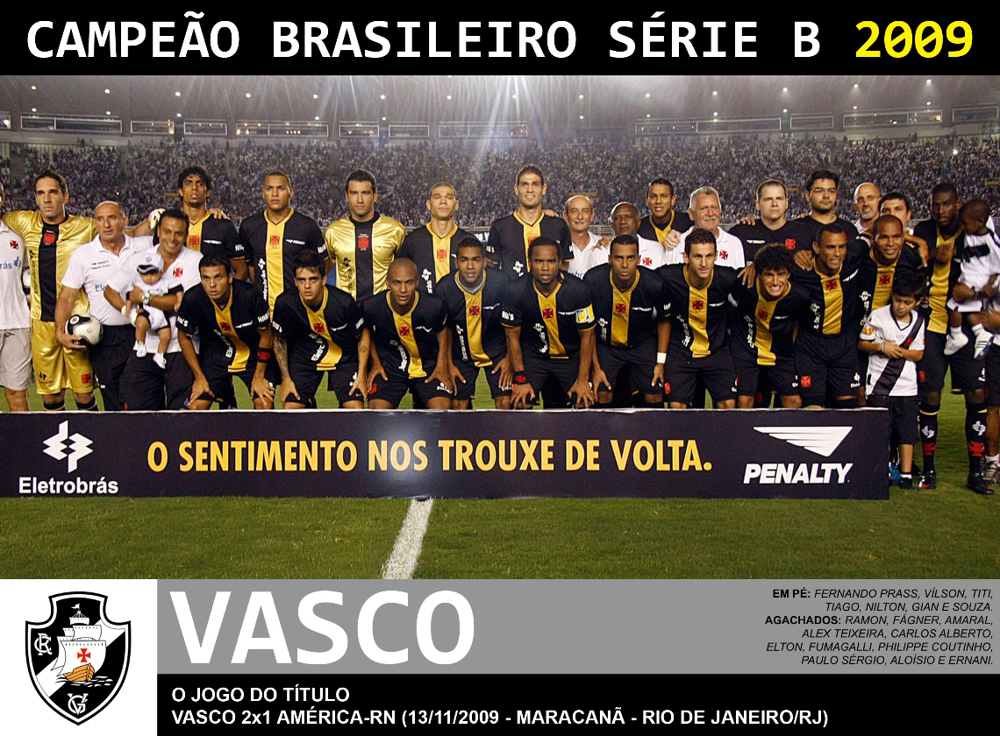

História do vasco
O Clube de Regatas Vasco da Gama foi fundado por quatro remadores em 21 de agosto de 1898, voltado para o esporte marítimo. Seu primeiro time de futebol surgiu no fim de 1915. O nome Vasco da Gama é uma homenagem ao português, que foi um dos pioneiros na realização de um percurso marítimo até às Indias. No ano de fundação do clube, comemorava-se o quarto centenário da descoberta do caminho marítimo às Índias.
Titulos
taça Copa Libertadores da América
1 título (1998)
ㅤ
taça Campeonato Brasileiro
4 títulos (1974, 1989, 1997 e 2000)
ㅤ
taça Campeonato Brasileiro - Série B
1 título (2009)
ㅤ

taça Recopa Sul-Americana
2 títulos (1993 e 1994)
ㅤ
taça Campeonato Sul-Americano de Clubes
1 título (1948)
ㅤ
taça Copa Mercosul
1 título (2000)
ㅤ
taça Torneio Rio-São Paulo
3 títulos (1958, 1966 e 1999)
ㅤ
taça Copa do Brasil
1 título (2011)
ㅤ
taça Campeonato Carioca
22 títulos (1923, 1924, 1929, 1934, 1936, 1945, 1947, 1949, 1950, 1952, 1956,
1958, 1970, 1977, 1982, 1987, 1988, 1992, 1993, 1994, 1998, 2003, 2015, 2016)